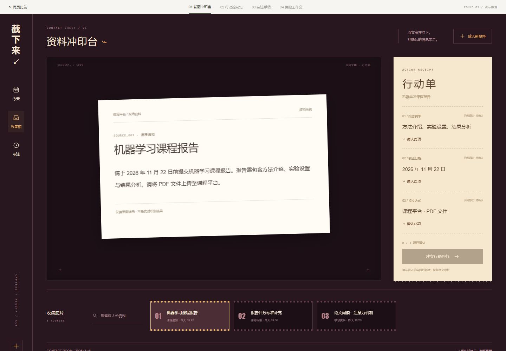
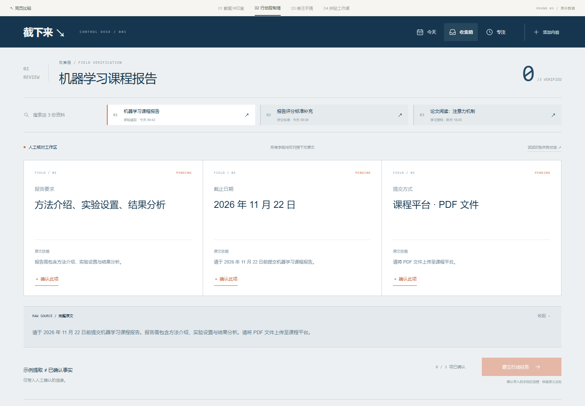
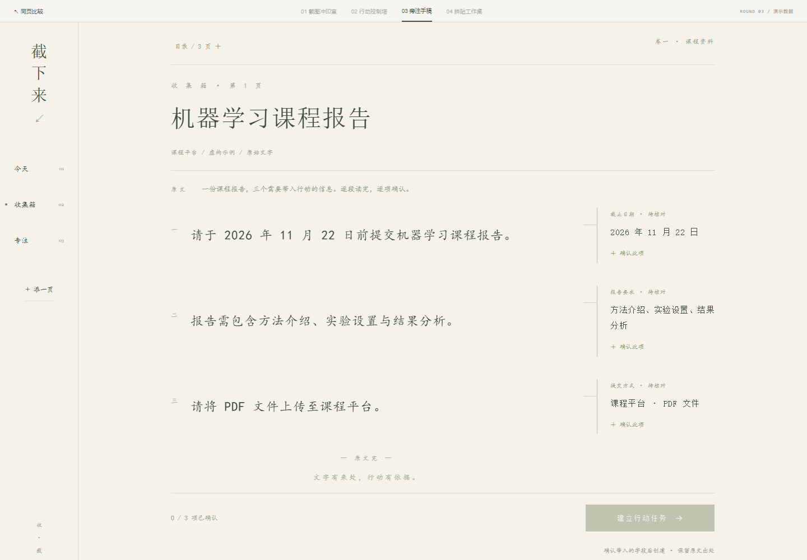
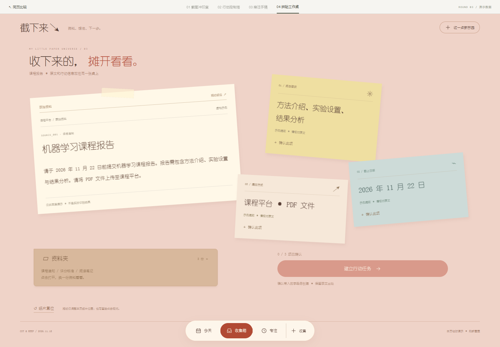

SAME CONTENT. FOUR SPATIAL SYSTEMS.
同一份资料，
四种空间结构。
同一份课程通知、同样三个字段、同一个确认流程。
切换下方页面类型，比较每套方案的真实布局。第三轮结构探索 · 虚构演示数据 · 点击进入交互
四套均为 1440 × 1000 实际截图
截图冲印室
CONTACT ROOM
CONTACT ROOM

行动控制塔
CONTROL DESK
CONTROL DESK

旁注手稿
MARGINALIA
MARGINALIA

拼贴工作桌
CUT & KEEP
CUT & KEEP

每套都可切换「今天 / 收集箱 / 专注」。可核对字段、勾选计划、开始计时，或临时收集文字与图片。所有状态刷新即重置。